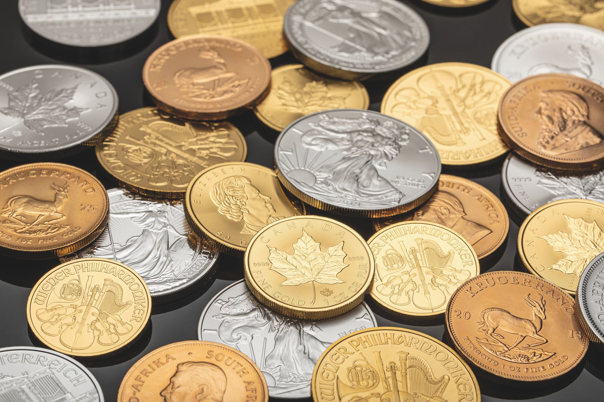

You’re likely wondering: “What are Mexican Silver Libertad coins, and are they a good investment?” Great question! These stunning, highly-guaranteed silver coins have become increasingly popular with investors seeking a tangible asset and a potentially profitable addition to their portfolios. At Fused Distribution, we stock a wide selection of Libertad coins, and we’re here to guide you through understanding their history, value, and how they fit into a broader precious metals strategy. These coins, officially minted by the Bank of Mexico, are renowned for their beautiful designs - featuring a soaring eagle - and their exceptional purity, typically 99.9% fine silver.

Historically, Libertad coins have consistently held their value, making them a reliable store of wealth. According to recent market analysis, the Mexican Silver Libertad has seen an average annual increase of approximately 6-8% over the past decade. Here, we’ll look at the different dates and sizes available, discussing factors like mintage figures, condition grading, and current market prices. We’ll also explore how to buy them safely and securely, and then move on to practical sections covering storage, authentication, and ultimately, how to incorporate these coins into your investment plan. Let’s get started!
What are Mexican Silver Libertad Coins?
What are Mexican Silver Libertad Coins?

Mexican Silver Libertad coins are a highly sought-after investment option for discerning silver buyers. These stunning coins, first minted in 2008, are produced by the Royal Mint of Mexico and are instantly recognizable by their dramatic, open-eye design - a unique feature that sets them apart from other silver bullion coins. We stock a wide variety of Libertad sizes, from the popular 1-ounce coins to smaller 1/4-ounce options, catering to different budgets and investment goals.
These coins are 999 fine silver, meaning they contain nearly pure silver, making them a reliable store of value. They are also exempt from the melt tax that applies to most other silver bullion, offering a significant cost advantage. Historically, the Mexican Silver Libertad has seen strong appreciation in value, and many investors consider it a key component of a well-rounded silver portfolio. We recommend starting with a small quantity to familiarize yourself with the market.
Understanding the History and Significance of Libertad Coins
Understanding the History and Significance of Libertad Coins
Mexican Silver Libertad coins have a rich and fascinating history, deeply intertwined with the economic and political market of Mexico. Initially struck in 1732 as assay coins, they were designed to standardize silver transactions and replace the unreliable Spanish reales. Over time, they evolved into a highly sought-after collectible and investment grade silver coin. We stock a wide selection of Libertad coins, from vintage examples to modern annual releases, catering to collectors and investors alike.
These coins are particularly popular due to their beautiful design - featuring a majestic eagle perched upon a cactus - and their consistent purity. They’re produced by the Casa de Moneda de México (Mint of Mexico) and are typically struck in .999 fine silver. Historically, the Libertad has been a reliable indicator of silver prices, and today, they remain a favorite among those seeking tangible silver assets. We recommend starting your collection with a few key dates to gain a feel for the series.
Why Invest in Mexican Silver Libertad Coins?
Why Invest in Mexican Silver Libertad Coins?
As a trusted supplier of silver bullion, we at Fused Distribution consistently see Mexican Silver Libertad coins become a popular choice for investors. These coins, officially produced by the Mexican Mint, offer a compelling blend of value, liquidity, and historical significance. They’re a fantastic entry point into the world of precious metals, particularly for those new to the market. Unlike some other silver bullion options, Libretads are often readily available and trade easily, making them a convenient investment.
The appeal of the Libertad is multi-faceted. They're beautifully designed, featuring stunning imagery of the Mexican eagle and serpent, which adds to their collectible value alongside their silver content. Current melt values are consistently strong, and the coins typically trade at a premium over spot price, reflecting their desirability. Historically, Libretads have demonstrated a solid track record of holding their value, making them a reliable store of wealth.
The Different Mint Marks and Their Value
The Different Mint Marks and Their Value
As you go deeper into Mexican Silver Libertad coins, understanding the mint marks is crucial for assessing value and authenticity. We stock a wide variety of these beautiful coins, and knowing the subtle differences in their markings can significantly impact your investment. The primary mint mark is “S,” indicating coins struck at the San Francisco Mint. These are generally the most sought-after and command the highest premiums, often due to limited availability and collector demand.
However, coins marked “M” originate from the Mexico City Mint, and “U” comes from the United States Mint. While “M” coins are still desirable, they typically hold slightly lower value than “S” coins. “U” coins, produced for the US market, are often available in larger quantities and therefore tend to be less expensive. We recommend carefully examining the mint mark when evaluating a Libertad coin for potential investment.
How to Identify Genuine Mexican Silver Libertads
At Fused Distribution, we understand that investing in precious metals can be exciting, and the Mexican Silver Libertad is a popular choice for many. However, it’s crucial to ensure you’re purchasing authentic coins to maintain their value. Counterfeit Libertad coins are unfortunately prevalent, so learning to spot the genuine article is essential. Start by examining the coin’s weight - the official weight is 1.02 troy ounces. We recommend using a digital scale for the most accurate measurement.
Next, scrutinize the details. Genuine Libertads feature crisp, sharp details on the obverse (featuring Miguel Hidalgo) and reverse (showing a silver eagle). Look closely at the lettering, the shield design, and the eagle’s feathers. The coin’s surface should be smooth and free of imperfections, and the luster should be a bright, reflective silver. Finally, check the mint mark - “S” indicates San Francisco, “M” signifies Mexico City, and “W” denotes West Point.
Pricing and Market Trends for Mexican Silver Coins
Pricing and Market Trends for Mexican Silver Coins
As retailers specializing in precious metals, we at Fused Distribution closely monitor the Mexican Silver Libertad market. These coins, known for their beautiful designs and high silver content, offer a fantastic entry point for investors. Currently, a 1 oz Mexican Silver Libertad typically trades between $24 and $28, though this fluctuates based on market conditions. We’ve seen a steady increase in demand over the past year, largely driven by inflation concerns and a general desire for tangible assets.
The price of Libs is heavily influenced by the spot price of silver, which we track daily. You can expect a correlation - as silver rises, so too does the value of the Libertad. Also, premiums over spot can vary depending on the dealer and the coin’s condition. We recommend comparing prices from multiple reputable sources, including online bullion dealers and local coin shops. Keep an eye on market trends; periods of increased economic uncertainty often see increased interest in silver, potentially driving up prices.
Where to Buy Mexican Silver Libertad Coins (and Where Not to)
Where to Buy Mexican Silver Libertad Coins (and Where Not to)
At Fused Distribution, we understand you’re looking for reliable sources to acquire Mexican Silver Libertad coins - a popular choice for investors. We stock a wide selection of these highly sought-after coins, primarily through reputable bullion dealers and precious metals distributors. For the best prices and widest selection, we recommend focusing on established online platforms like APMEX, SD Bullion, and JM Bullion. These sites offer competitive pricing, secure shipping, and detailed coin grading information.
However, be cautious of purchasing from smaller, unverified online marketplaces or local coin shops without thorough research. While some local dealers may offer Libertad coins, their prices are often inflated, and the authenticity of the coins can be questionable. Always verify the coin’s authenticity with a reputable grading service like PCGS or NGC before investing. We strongly advise against buying from auction sites without significant experience.
Storing and Protecting Your Mexican Silver Libertad Investment
Storing and Protecting Your Mexican Silver Libertad Investment
As a trusted supplier of silver bullion, we understand the importance of safeguarding your investment in Mexican Silver Libertads. These coins are a popular choice for collectors and investors alike, and proper storage is crucial to maintaining their value and preventing damage. We recommend storing your coins in airtight, inert containers like coin tubes, flips, or hard-shell capsules - avoid PVC sleeves as they can react with the silver over time.
To further protect your coins, consider using a long-term storage solution like a safe deposit box or a fireproof safe. While the average silver price fluctuates, keeping your coins in a secure location minimizes the risk of theft or damage from environmental factors. We also recommend insuring your collection against loss or damage, just as you would with any valuable asset.
At Fused Distribution, we stock a wide variety of storage solutions to suit your needs and budget. Don’t hesitate to contact us if you'd like personalized recommendations based on the quantity of coins you own.
Related
- Perth Mint Silver Kangaroo Buying Guide
- Peace Silver Dollar Value And History
- Silver Royalty Companies Explained Wheaton Precious Metals
Read next: Perth Mint Silver Kangaroo Buying Guide